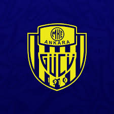
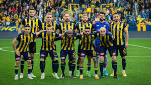

Ankaragücü Hakkında
Ankaragücü, Ankara’nın en köklü futbol kulüplerinden biridir. 1911 yılında kurulmuştur ve Türkiye'nin en eski futbol takımlarından biridir. Renkleri sarı-laciverttir. "Başkent’in takımı" olarak bilinir ve taraftar grubu Gecekondu çok tutkuludur.
Başarılar
- Türkiye Kupası Şampiyonu: 1971-72 sezonu
- Türkiye Süper Kupası (Cumhurbaşkanlığı Kupası): 1981
- Uzun yıllar Süper Lig’de mücadele etti; inişli çıkışlı sezonlar yaşadı.
- 2022-2023 sezonunda Süper Lig'de mücadele etti, ancak düşme-kalma hattında dalgalandı.
Önemli Oyuncular
- Hakan Kutlu – 15 yıl boyunca Ankaragücü formasını terleterek kaptanlık yapmış, istikrarı ve liderliğiyle kulübün simgesi haline gelmiştir.
- Tarık Daşgün – Yaratıcı oyun tarzı ve teknik becerisiyle 90’larda takımın hücum gücünü taşıyan isimlerden biri olmuştur.
- Roman Bednář – Kısa süre oynamasına rağmen attığı kritik gollerle taraftarın sevgisini kazanmış ve takımın hücum hattına dinamizm katmıştır.
Takımın Görselleri

